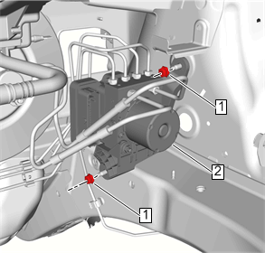
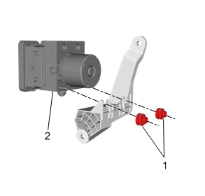

带制动压力调节阀的电子制动控制模块的更换
拆卸程序
- 1.将点火开关置于OFF（关闭）位置。
- 2.蓄电池»拆下 –蓄电池的更换
- 3.拆下散热器储液罐，将其放在一旁。散热器储液罐的更换
- 4.电气连接器»断开
-

5.将4根制动管从制动压力调节阀上拆下。
- 6.制动压力调节阀主管@制动压力调节阀»拆下 –制动压力调节阀主管的更换
- 7.制动压力调节阀副管@制动压力调节阀»拆下 –制动压力调节阀副管的更换
- 8.制动压力调节阀托架螺母 (1) »拆下[2x]
- 9.制动压力调节阀及其托架总成 (2)»拆下
-

10.制动压力调节阀安装螺母 (1)»拆下[2x]
- 11.带制动压力调节阀的电子制动控制模块 (2)»拆下